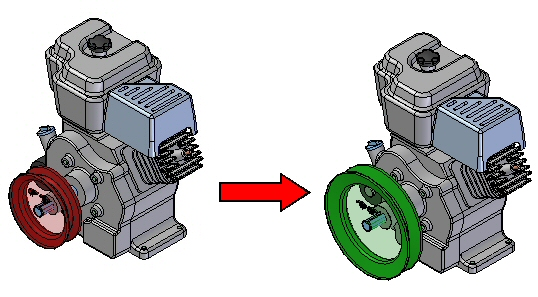
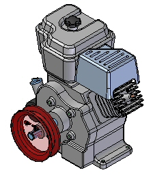
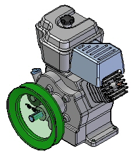

Activity: Replacing parts in an assembly
Activity
-
In this activity you will replace a subassembly with a similar subassembly inside of the top level assembly.

The assembly you will open has a small pulley subassembly that you will replace with a large pulley subassembly.
-
Click the File tab→Open→Browse and select Engine.asm from the folder where the activity files are located.

The subassembly small.asm will be replaced with large.asm.
In the Home tab, in the Modify group, choose the Replace Part command .
In PathFinder, select small.asm as the subassembly to replace. Accept the selection.
In the replacement part dialog box, browse for the assembly large.asm in the folder where the activity files are located, and then click Open.
The subassembly has been replaced.

Save and close the assembly. This completes the activity.
In this activity you learned how to replace a subassembly within a top level assembly.
-
Click the Close button in the upper–right corner of the activity window.
Answer the following questions:
-
Can you replace subassemblies within an assembly?
-
Can parts with dissimilar geometry be replaced?
-
Can you replace parts in a subassembly, and if so, how?
-
Can you replace members when creating a family of assemblies?
-
Can you replace subassemblies within an assembly?
Subassemblies as well as parts can be replaced in a top level assembly.
-
Can parts with dissimilar geometry be replaced?
Parts with dissimilar geometry can be replaced, however failed relationships are likely to occur. These would have to be repaired.
-
Can you replace parts in a subassembly, and if so, how?
Parts can be replaced in a subassembly by in place activating the subassembly and then replacing the part.
-
Can you replace members when creating a family of assemblies?
When creating a member of a family of assemblies, replacing a part as an occurrence override.